Cada dibujo se puede guardar en un fichero distinto que se puede llamar svg-ficheros-2_X_Y.html, donde X es el número de ejercicio e Y el número de dibujo. Las imágenes SVG se muestran con un borde negro. En cada ejercicio se proporciona una plantilla de la página html que indica la porción del plano SVG mostrado en la imagen. En cada ejercicio se proporciona también una imagen con la posición de los ejes. Las figuras se han dibujado siempre en una zona de 300px x 300px con un margen de 10px alrededor, por lo que el tamaño total de la zona visible es de 320px x 320px.
Cree las imágenes SVG de este ejercicio a partir de la plantilla siguiente. Los valores de la imagen SVG se han elegido para mostrar el primer cuadrante y los ejes de coordenadas. La posición de los ejes se muestra en la imagen siguiente, pero no debe mostrarse en las imágenes del ejercicio.
Escriba seis programas que generen las siguientes imágenes:
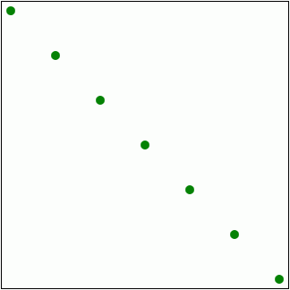
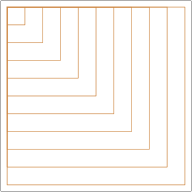
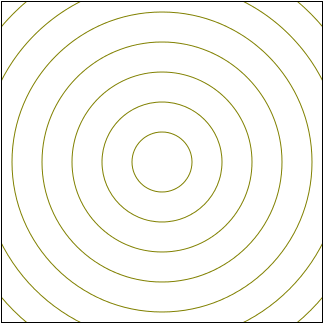
SVG Ficheros (2) - 2 - Varias fórmulas, una forma
Cree las imágenes SVG de este ejercicio a partir de la plantilla siguiente. Los valores de la imagen SVG se han elegido para mostrar los ejes de coordenadas en el centro del dibujo. La posición de los ejes se muestra en la imagen siguiente, pero no debe mostrarse en las imágenes del ejercicio.
Escriba seis programas que generen las siguientes imágenes:
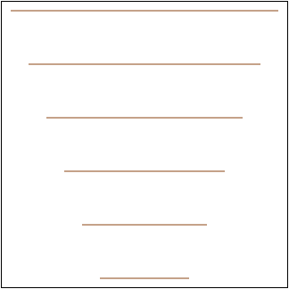
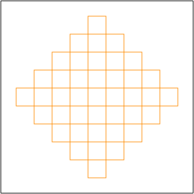
SVG Ficheros (2) - 3 - Varias fórmulas, varias formas
Cree las imágenes SVG de este ejercicio a partir de la plantilla siguiente. Los valores de la imagen SVG se han elegido para mostrar el primer cuadrante y los ejes de coordenadas. La posición de los ejes se muestra en la imagen siguiente, pero no debe mostrarse en las imágenes del ejercicio.

 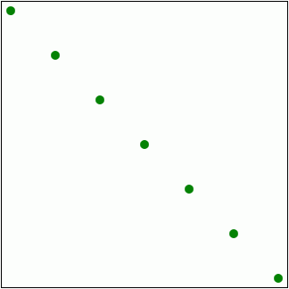
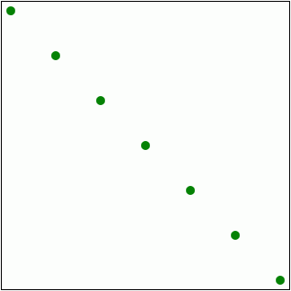

 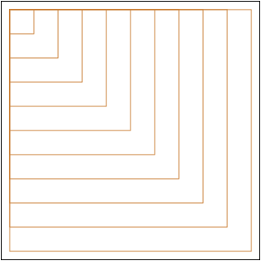
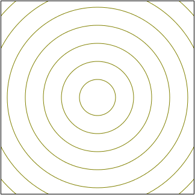
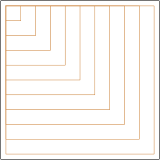
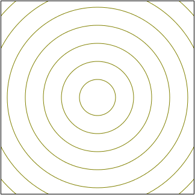


 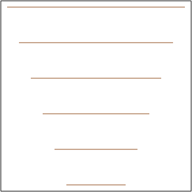
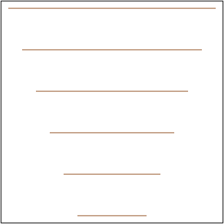

 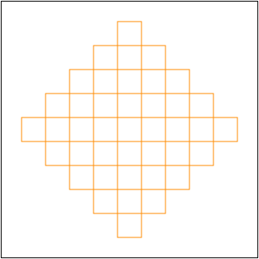
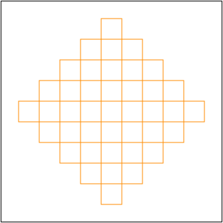


 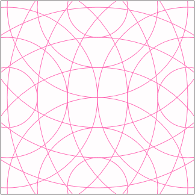
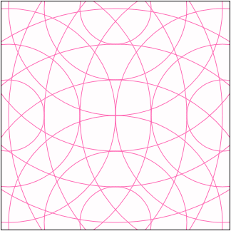